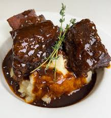

Braised Short Ribs

Description
These braised short ribs are practically foolproof, with just two crucial steps ensuring a perfect dish. The first is to ensure the beef is well-browned—deep, dark, and caramelized to create a flavorful crust. This browning step is key to developing a rich, savory base for the braising liquid.
The second step is simple: braise the short ribs until they are fork-tender. When they’re done, you should be able to stick a fork in them with ease, and they will be ready to melt in your mouth. As long as you follow these steps, you’ll end up with delicious, fall-off-the-bone short ribs every time. The only way to go wrong is to undercook them—so don’t skip the braising time!
Ingredients
- 4 slices bacon, cut into ½-inch pieces
- 3 ½ pounds beef short ribs
- salt and ground black pepper to taste
- 6 sprigs fresh thyme, leaves stripped
- 1 bay leaf
- 1 onion, diced
- 3 cloves garlic, minced
- 2 tablespoons all-purpose flour
- 1 cup dry sherry
- 1 quart beef broth
Steps
- Preheat the oven to 350 degrees F (175 degrees C).
- Place bacon in a large skillet and cook over medium-high heat, turning occasionally, until evenly browned, about 10 minutes. Transfer crisped bacon with a slotted spoon to a Dutch oven. Keep bacon drippings in the skillet.
- Generously season short ribs with salt and pepper.
- Heat bacon drippings in the skillet over high heat. Cook short ribs in hot drippings until browned and caramelized on all sides, 3 to 5 minutes per side. Transfer ribs to a Dutch oven, reserving drippings in the skillet. Add thyme and bay leaf to the Dutch oven. Set aside.
- Reduce heat to medium. Cook and stir onion in the skillet until soft and golden, 5 to 10 minutes. Add garlic; cook and stir until fragrant, about 30 seconds.
- Whisk flour into onion mixture and stir until mixture becomes paste-like and light golden brown, 1 to 3 minutes.
- Pour sherry into onion mixture; cook until thick and hot, about 2 minutes. Pour onion-sherry mixture into the Dutch oven; pour in beef broth and season with salt. Bring to a simmer and cover the Dutch oven with a lid.
- Transfer the Dutch oven to the preheated oven and cook until short ribs are fork-tender, about 2 hours. Remove ribs to a serving dish, reserving sauce in the pot.
- Set Dutch oven over high heat and boil sauce until reduced and slightly thickened, about 10 minutes. Spoon reduced sauce over ribs.